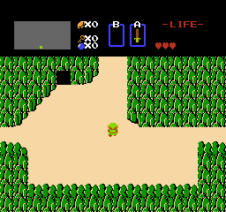
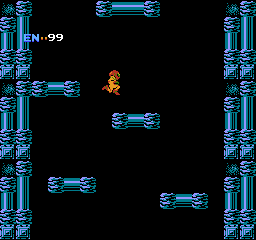
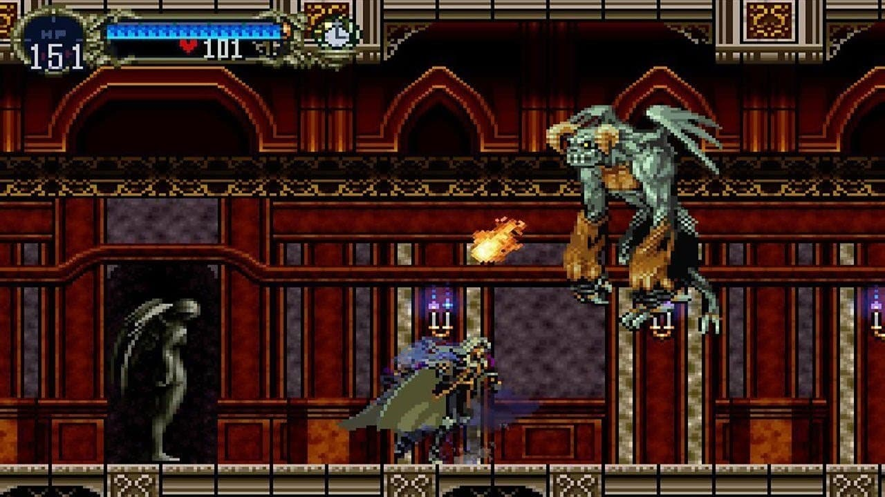

The action-adventure games genre
Characteristics
As the name suggests, the action-adventure games genre is a mix of two genres: action and adventure. It takes the fast-paced and skill based gameplay of action games and the exploration,
problem-solving and narrative-focused elements of adventure games, mixing and alternating between the two. While it can be argued that the action-adventure could be considered
just a subgenre of either of the two genres that defines it, the high amount and popularity of games that fits under this category specifically often led people to consider it as a genre on its own.
This classification isn't too specific, leading to a very broad and varied catalog of games considered action-adventure games while at the same time causing some disagreements
on the inclusion of some of them in this genre.
Subgenres
The subgenres of action-adventure games are usually classified by various gameplay elements (for example "platform-adventure" games, "stealth" games and "survival" games) or, in the case of 3-dimensional games in the genre, by the perspective (1st person or 3rd person).
The action-adventure genre in the third generation
The Legend of Zelda
In 1986 Nintendo released The Legend of Zelda for the NES, revolutionizing not only the action-adventure genre but video games as a whole.
It gave players complete freedom on the exploration of its world while offering both combat and puzzle-solving challanges.
|  |
| The Legend of Zelda |
Metroid
Another important title on the NES was the first Metroid, creating another popular serie of its own. It was also the first game of the "Metroidvania" subgenre of action-adventure games,
defined mostly as 2D platform-adventure games with a focus on non-linear exploration of a large interconnected map. Its name comes from the mix of Metroid and Castlevania;
the latter also got its first title of the serie released in 1986, although it's not considered an action-adventure game: the game that defined the subgenre was another game in the serie (mentioned in the next section).
|  |
| Metroid |
Other important games
Other notable action-adventure games in this period include Wonder Boy III: The Dragon's Trap (Sega Master System), StarTropics (NES) and Metal Gear (MSX2).
The evolution of the action-adventure genre in the following generations
The metroidvania subgenre
As mentioned in the previous section, a very popular subgenre of action-adventure games is "Metroidvania". This subgenre is defined by two games of the fourth generations,
often used as reference for developing "metroidvanias" and quoted as the best of this subgenre: Castlevania: Symphony of the Night and Super Metroid.
|  |
| Castlevania: Symphony of the Night |
Other important series
The Legend of Zelda series continues to be succesful to this day, with every entry in the series being critically acclaimed and some of them in particular even revolutionized the genre again
(for example The Legend of Zelda: Ocarina of Time).
 |
| The Legend of Zelda: Ocarina of Time |
Other highly influential series of action-adventure games came in the following generations, with some notable mentions being Resident Evil (that created the "survival horror" subgenre), Metal Gear Solid (which popularized the "stealth action" subgenre), Tomb Raider, Assassin's Creed, Uncharted ...
Sources
Left background image
Right background image
Banner image
Metroid gif
Zelda gif
Castlevania: Symphony of the Night image
Zelda ocarina of time image
{kind=link}
{kind=link}
{kind=link}
{kind=link}
{kind=link}
{kind=link}
{kind=link}